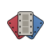

WelcomeScreen today: the drifting four-column poster wall (PosterWall, style .welcome) bright at the top and fading to black, the fan and wordmark at 42pt, "What kind of viewer are you?", then Discover your taste, Import from Letterboxd, "Have an account? Sign in" and "Explore the 14 archetypes". The wall is the one moment that reads like Popcorn's dimmed mosaic. The proposal keeps every button and swaps the wall for a Montage-only picture: the fan, re-made from three of the deck's posters.

MontageDoes the current flow already offer a guest choice? Partly. On iOS you can open the app, take the whole deck and see your reveal with no account (OnboardingFlow runs welcome, deck and reveal signed out, and the stash keeps the ratings for 7 days). The account is asked for only at the reveal's save, and there it is the only way forward: there is no "continue without an account" into Picks, Browse or Tonight. The web goes further: a signed-out visitor can browse (guestBrowse, NewMemberBrowse guest), and a movie night guest seat needs no account.
Recommendation. Ship the "No account needed to start" line now (S): it answers Popcorn's "continue as guest" with what Montage already does. Try the poster fan (M) against the wall on a few people before switching; it does make the screen unmistakably Montage, but it gives up the motion the owner approved on 2026-10-30, and the deck opens over that same wall, so the hand-off loses its continuity. Treat the true guest mode (L) as a separate decision: it is the right answer to "recommendations within a minute" only if the owner accepts unsaved profiles that may never convert.